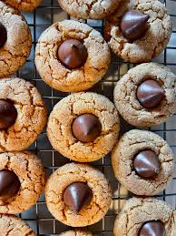

Home
Chocolate Drop Cookies

Description
This recipie is one my Grandmother made for me growing up. It was actually the first recipe she tought me how to make. I make it every christmas and they last maybe a couple of hours anywhere I take them.
Cooking Equpiment
- Oven
- Stand Mixer (not required but very helpful)
- Measuring Cups
- Cookie Sheet (any size will work but the bigger you have the less batches you will have to do)
Ingredients
- 1/2 Cup Butter
- 1/2 Cup Peanut Butter (I prefer crunchy but both creamy and crunchy works)
- 1/2 Cup Sugar
- 1/2 Cup Brown Sugar
- 1 unbeaten egg
- 1 tsp. Vanilla
- 1/2 Cup Flour
- Unwrapped Hershey Chocolate Kisses
- Extra sugar for rolling dough balls into
Cooking Directions
-
Pre-heat oven to 375
-
Cream together butter and peanut butter
-
Gradually add in other ingredients, order does not matter, but I usually do flour last.
-
Once dough is full mixed roll into half inch balls
-
Roll dough balls in sugar
-
Line on a lightly greased baking pan 1 inch apart
-
Bake at 375 for 8 minutes (these cookies can burn very easily so watch them)
-
Remove from the over and press Hershey kisses in the top.